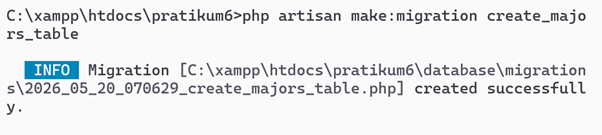
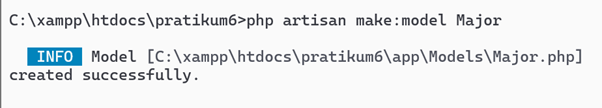
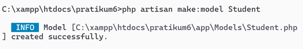
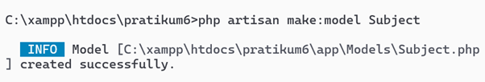
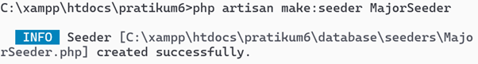
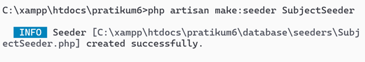
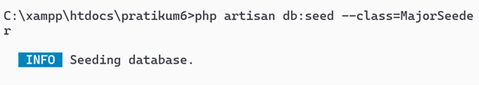
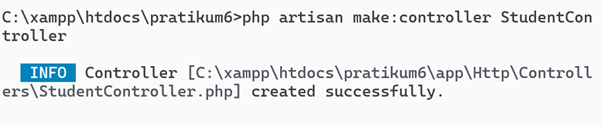

<!DOCTYPE html>
<html lang="id">
<head>
    <meta charset="UTF-8">
    <meta name="viewport" content="width=device-width, initial-scale=1.0">
    <title>Laporan Praktikum Laravel Relationship</title>
    <script src="https://cdn.jsdelivr.net/npm/react@18.2.0/umd/react.production.min.js"></script>
    <script src="https://cdn.jsdelivr.net/npm/react-dom@18.2.0/umd/react-dom.production.min.js"></script>
    <script src="https://cdn.jsdelivr.net/npm/babel-standalone@6.26.0/babel.min.js"></script>
    <link rel="preconnect" href="https://fonts.googleapis.com">
    <link rel="preconnect" href="https://fonts.gstatic.com" crossorigin>
    <link href="https://fonts.googleapis.com/css2?family=Inter:opsz,wght@14..32,300;14..32,400;14..32,500;14..32,600;14..32,700;14..32,800;14..32,900&family=Playfair+Display:ital,wght@0,500;0,600;0,700;1,500&display=swap" rel="stylesheet">
    <style>
        :root {
            --bg-primary: #060606;
            --bg-secondary: #0d0d0d;
            --bg-card: #111111;
            --border: #222222;
            --border-accent: #3a3a3a;
            --gold: #c8a84e;
            --gold-light: #d4af37;
            --gold-dark: #a68a2e;
            --gold-dim: #8b7340;
            --gold-glow: rgba(200,168,78,0.12);
            --text-primary: #e8e4dc;
            --text-secondary: #a09b91;
            --text-muted: #6b6560;
            --code-bg: #080808;
            --code-border: #2a2a2a;
            --tag-bg: rgba(200,168,78,0.1);
            --tag-border: rgba(200,168,78,0.3);
            --success: #2ecc71;
            --shadow-sm: 0 2px 8px rgba(0,0,0,0.3);
            --shadow-md: 0 4px 16px rgba(0,0,0,0.4);
            --shadow-lg: 0 8px 32px rgba(0,0,0,0.5);
            --radius-sm: 4px;
            --radius-md: 8px;
            --radius-lg: 16px;
            --radius-xl: 24px;
            --transition: 0.25s cubic-bezier(0.4, 0, 0.2, 1);
        }

        *, *::before, *::after { box-sizing: border-box; margin: 0; padding: 0; }

        body {
            background-color: var(--bg-primary);
            font-family: 'Inter', 'Segoe UI', system-ui, -apple-system, sans-serif;
            color: var(--text-primary);
            line-height: 1.75;
            -webkit-font-smoothing: antialiased;
            letter-spacing: 0.01em;
        }
        ::-webkit-scrollbar { width: 8px; }
        ::-webkit-scrollbar-track { background: var(--bg-primary); }
        ::-webkit-scrollbar-thumb { background: var(--border-accent); border-radius: 4px; }

        .container { width: 90%; max-width: 1140px; margin: 0 auto; padding: 0 20px; }
        .row { display: flex; flex-wrap: wrap; margin: 0 -10px; }
        .col-12 { width: 100%; padding: 0 10px; }
        .mt-3 { margin-top: 1rem; } .mt-4 { margin-top: 1.5rem; } .mt-5 { margin-top: 3rem; }
        .mb-4 { margin-bottom: 1.5rem; } .mb-5 { margin-bottom: 3rem; }
        .text-center { text-align: center; }

        /* NAV */
        .nav-wrapper { padding: 20px 0; }
        .btn-back {
            display: inline-flex; align-items: center; gap: 8px;
            background-color: transparent; color: var(--gold-light);
            border: 1.5px solid var(--gold-dim); border-radius: 40px;
            padding: 10px 24px; text-decoration: none;
            font-size: 0.9rem; font-weight: 500; letter-spacing: 0.02em;
            transition: var(--transition); cursor: pointer;
            font-family: 'Inter', 'Segoe UI', system-ui, sans-serif;
        }
        .btn-back:hover { background-color: var(--gold-glow); border-color: var(--gold-light); box-shadow: var(--shadow-md); }
        .btn-back-arrow { font-size: 1.1rem; line-height: 1; transition: transform 0.2s ease; }
        .btn-back:hover .btn-back-arrow { transform: translateX(-3px); }

        /* HERO */
        .hero-section {
            background: linear-gradient(135deg, #0a0a08 0%, #12100e 40%, #0d0b08 100%);
            border-radius: var(--radius-xl); padding: 48px 40px;
            text-align: center; margin: 20px 0 40px;
            position: relative; overflow: hidden;
            box-shadow: var(--shadow-lg); border: 1px solid var(--border);
        }
        .hero-section::before {
            content: ''; position: absolute; top: -60px; right: -60px;
            width: 220px; height: 220px; border-radius: 50%;
            background: rgba(200,168,78,0.05); pointer-events: none;
        }
        .hero-section::after {
            content: ''; position: absolute; bottom: -40px; left: -40px;
            width: 160px; height: 160px; border-radius: 50%;
            background: rgba(200,168,78,0.04); pointer-events: none;
        }
        .hero-section h1 {
            font-family: 'Playfair Display', Georgia, 'Times New Roman', serif;
            font-size: 2.6rem; font-weight: 700; color: var(--text-primary);
            margin: 0 0 8px; letter-spacing: 0.03em; position: relative; z-index: 1;
        }
        .hero-section h3 {
            font-family: 'Playfair Display', Georgia, 'Times New Roman', serif;
            font-size: 1.35rem; font-weight: 400; color: var(--gold-light);
            margin: 0 0 16px; letter-spacing: 0.04em; font-style: italic;
            position: relative; z-index: 1;
        }
        .hero-section .hero-meta {
            font-size: 0.95rem; color: var(--text-muted);
            letter-spacing: 0.05em; font-weight: 400; position: relative; z-index: 1;
        }
        .hero-divider {
            width: 60px; height: 2px; background: var(--gold);
            margin: 16px auto; border-radius: 1px; position: relative; z-index: 1;
        }

        /* CARD */
        .card-laporan {
            background: var(--bg-card); border-radius: var(--radius-lg);
            border: 1px solid var(--border); box-shadow: var(--shadow-sm);
            margin-bottom: 28px; padding: 32px 36px;
            transition: box-shadow 0.3s ease, transform 0.3s ease, border-color 0.3s;
            position: relative;
        }
        .card-laporan:hover { box-shadow: var(--shadow-lg); transform: translateY(-2px); border-color: var(--border-accent); }

        .card-laporan h2 {
            font-family: 'Playfair Display', Georgia, 'Times New Roman', serif;
            font-size: 1.65rem; font-weight: 600; color: var(--gold-light);
            border-left: 4px solid var(--gold); padding-left: 18px;
            margin-bottom: 20px; letter-spacing: 0.03em; line-height: 1.3;
        }
        .card-laporan h4 {
            font-family: 'Playfair Display', Georgia, 'Times New Roman', serif;
            font-size: 1.2rem; font-weight: 600; color: var(--gold-light);
            margin-top: 28px; margin-bottom: 10px; letter-spacing: 0.03em;
        }
        .card-laporan p { margin-bottom: 12px; color: var(--text-secondary); font-weight: 400; line-height: 1.8; }
        .card-laporan ul, .card-laporan ol { margin: 10px 0 16px 20px; color: var(--text-secondary); line-height: 1.9; }
        .card-laporan li { margin-bottom: 6px; padding-left: 4px; }
        .card-laporan strong { color: var(--text-primary); font-weight: 600; }

        /* BADGES */
        .badge-tools {
            display: inline-block; background: var(--tag-bg);
            color: var(--gold-light); padding: 7px 16px; border-radius: 40px;
            margin: 5px 6px; font-size: 0.82rem; font-weight: 500;
            letter-spacing: 0.03em; transition: var(--transition);
            border: 1px solid var(--tag-border);
        }
        .badge-tools:hover { background: rgba(200,168,78,0.2); box-shadow: var(--shadow-md); }

        /* CODE */
        pre {
            background-color: var(--code-bg); padding: 18px 20px;
            border-radius: var(--radius-md); overflow-x: auto;
            font-family: 'SF Mono', 'Fira Code', 'Courier New', monospace;
            font-size: 0.88rem; border: 1px solid var(--code-border);
            margin: 16px 0; line-height: 1.7; color: #c9d1d9;
        }
        code {
            background-color: rgba(200,168,78,0.08); padding: 3px 9px;
            border-radius: var(--radius-sm); color: var(--gold-light);
            font-weight: 500; font-size: 0.9em;
            font-family: 'SF Mono', 'Fira Code', 'Courier New', monospace;
            border: 1px solid rgba(200,168,78,0.2);
        }
        pre code { background-color: transparent; padding: 0; border-radius: 0; color: inherit; font-weight: 400; border: none; }

        /* IMAGES */
        .card-laporan img {
            max-width: 100%; border-radius: var(--radius-md);
            margin: 18px 0; border: 1px solid var(--border);
            box-shadow: var(--shadow-md); display: block;
        }
        .card-laporan img+em, .card-laporan img+p em {
            display: block; font-size: 0.85rem; color: var(--text-muted);
            margin-top: -8px; margin-bottom: 16px; font-style: italic; letter-spacing: 0.02em;
        }

        /* TABLE */
        table {
            width: 100%; border-collapse: collapse; margin: 16px 0;
            font-size: 0.9rem; border-radius: var(--radius-md);
            overflow: hidden; box-shadow: var(--shadow-sm);
        }
        th, td { border: 1px solid var(--border); padding: 12px 16px; text-align: left; line-height: 1.6; }
        th {
            background-color: var(--bg-secondary); color: var(--gold-light);
            font-weight: 500; letter-spacing: 0.04em; font-size: 0.82rem; text-transform: uppercase;
        }
        td { background-color: var(--bg-card); color: var(--text-secondary); }
        tr:nth-child(even) td { background-color: var(--bg-secondary); }
        td code { font-size: 0.82rem; }

        /* BUTTON PRIMARY */
        .btn-primary-custom {
            display: inline-flex; align-items: center; gap: 8px;
            background: linear-gradient(135deg, var(--gold-dark), var(--gold));
            border: none; padding: 12px 32px; border-radius: 40px;
            color: #0a0a0a; font-weight: 700; text-decoration: none;
            letter-spacing: 0.03em; font-size: 0.95rem; transition: var(--transition);
            cursor: pointer; font-family: 'Inter', 'Segoe UI', system-ui, sans-serif;
            box-shadow: var(--shadow-sm);
        }
        .btn-primary-custom:hover { box-shadow: 0 4px 20px var(--gold-glow); transform: translateY(-1px); }
        .btn-arrow { font-size: 1.1rem; transition: transform 0.2s ease; }
        .btn-primary-custom:hover .btn-arrow { transform: translateX(3px); }

        /* GALLERY */
        .gallery {
            display: grid; grid-template-columns: repeat(auto-fill, minmax(280px, 1fr));
            gap: 20px; justify-items: center; margin-top: 16px;
        }
        .gallery-item {
            background: var(--bg-secondary); border-radius: var(--radius-md);
            padding: 14px; text-align: center; border: 1px solid var(--border);
            transition: var(--transition); width: 100%;
        }
        .gallery-item:hover {
            box-shadow: var(--shadow-lg); transform: translateY(-3px);
            border-color: var(--gold-dim);
        }
        .gallery-item img {
            width: 100%; border-radius: var(--radius-sm); margin: 0; border: 1px solid var(--border);
        }
        .gallery-caption {
            font-weight: 500; color: var(--gold-light); margin-top: 10px;
            font-size: 0.85rem; letter-spacing: 0.03em;
        }

        /* FOOTER */
        footer {
            background: linear-gradient(135deg, #0a0a08 0%, #12100e 100%);
            color: var(--text-secondary); padding: 36px 30px; text-align: center;
            border-radius: var(--radius-xl) var(--radius-xl) 0 0;
            margin-top: 48px; font-size: 0.9rem; letter-spacing: 0.03em; font-weight: 400;
            border: 1px solid var(--border); border-bottom: none;
        }
        footer strong { color: var(--text-primary); font-weight: 600; }
        .footer-divider {
            width: 40px; height: 2px; background: var(--gold);
            margin: 12px auto; border-radius: 1px;
        }
        .note-text { font-size: 0.85rem; color: var(--text-muted); font-style: italic; letter-spacing: 0.02em; margin-top: 8px; }

        /* FOOTER NAV */
        .footer-links {
            display: flex; justify-content: center; gap: 1rem;
            margin-top: 1.2rem; flex-wrap: wrap;
        }
        .footer-btn {
            display: inline-flex; align-items: center; gap: 0.5rem;
            background: var(--bg-card); border: 1px solid var(--border);
            color: var(--gold-light); padding: 0.6rem 1.4rem;
            border-radius: 2rem; font-size: 0.8rem; font-weight: 500;
            cursor: pointer; text-decoration: none; transition: all 0.2s;
        }
        .footer-btn:hover { border-color: var(--gold-light); background: var(--gold-glow); }

        @media (max-width: 768px) {
            .hero-section { padding: 32px 20px; border-radius: var(--radius-lg); }
            .hero-section h1 { font-size: 1.8rem; }
            .hero-section h3 { font-size: 1.05rem; }
            .card-laporan { padding: 22px 18px; border-radius: var(--radius-md); }
            .card-laporan h2 { font-size: 1.35rem; }
            .gallery { grid-template-columns: repeat(auto-fill, minmax(220px, 1fr)); gap: 14px; }
            table { font-size: 0.78rem; }
            th, td { padding: 8px 10px; }
            pre { padding: 12px 14px; font-size: 0.78rem; }
            .btn-back { padding: 8px 18px; font-size: 0.82rem; }
            .btn-primary-custom { padding: 10px 24px; font-size: 0.85rem; }
        }
        @media (max-width: 480px) {
            .container { width: 95%; padding: 0 8px; }
            .hero-section h1 { font-size: 1.5rem; }
            .hero-section h3 { font-size: 0.9rem; }
            .gallery { grid-template-columns: 1fr; }
            .card-laporan { padding: 16px 14px; margin-bottom: 18px; }
            .badge-tools { font-size: 0.72rem; padding: 5px 12px; margin: 3px 4px; }
        }
    </style>
</head>
<body>

<div id="root"></div>

<script type="text/babel">
    const SectionCard = ({ title, children, id }) => (
        <div className="card-laporan" id={id}>
            {title && <h2>{title}</h2>}
            {children}
        </div>
    );
    const Badge = ({ text }) => <span className="badge-tools">{text}</span>;
    const GalleryItem = ({ src, alt, caption }) => (
        <div className="gallery-item">
            
            <div className="gallery-caption">{caption}</div>
        </div>
    );

    const App = () => {
        const galleryData = [
            { src: "prk7/Picture1.png", alt: "Picture1 - membuat migration majors", caption: "Picture1: Migration majors" },
            { src: "prk7/Picture2.png", alt: "Picture2 - membuat migration student", caption: "Picture2: Migration students" },
            { src: "prk7/Picture3.png", alt: "Picture3 - membuat migration subjects", caption: "Picture3: Migration subjects" },
            { src: "prk7/Picture4.png", alt: "Picture4 - php artisan migrate", caption: "Picture4: php artisan migrate" },
            { src: "prk7/Picture5.png", alt: "Picture5 - membuat model Major", caption: "Picture5: Model Major" },
            { src: "prk7/Picture6.png", alt: "Picture6 - membuat model Student", caption: "Picture6: Model Student" },
            { src: "prk7/Picture7.png", alt: "Picture7 - membuat model Subject", caption: "Picture7: Model Subject" },
            { src: "prk7/Picture8.png", alt: "Picture8 - membuat MajorSeeder", caption: "Picture8: Seeder Major" },
            { src: "prk7/Picture9.png", alt: "Picture9 - membuat SubjectSeeder", caption: "Picture9: Seeder Subject" },
            { src: "prk7/Picture10.png", alt: "Picture10 - membuat StudentSeeder", caption: "Picture10: Seeder Student" },
            { src: "prk7/Picture11.png", alt: "Picture11 - db:seed MajorSeeder", caption: "Picture11: db:seed MajorSeeder" },
            { src: "prk7/Picture12.png", alt: "Picture12 - db:seed SubjectSeeder", caption: "Picture12: db:seed SubjectSeeder" },
            { src: "prk7/Picture13.png", alt: "Picture13 - db:seed StudentSeeder", caption: "Picture13: db:seed StudentSeeder" },
            { src: "prk7/Picture14.png", alt: "Picture14 - membuat StudentController", caption: "Picture14: Controller Student" },
        ];

        return (
            <div>
                <div className="container nav-wrapper">
                    <div className="row">
                        <div className="col-12">
                            <a href="/" className="btn-back">
                                <span className="btn-back-arrow">&larr;</span> Kembali ke index
                            </a>
                        </div>
                    </div>
                </div>

                <div className="container mt-5">
                    <div className="row">
                        <div className="col-12">
                            <div className="hero-section">
                                <h1>Laporan Praktikum Laravel Relationship</h1>
                                <div className="hero-divider"></div>
                                <h3>Student, Major, Subject &mdash; One-to-Many &amp; Many-to-Many</h3>
                                <p className="hero-meta">Achmad Abidy R &bull; Informatika 24</p>
                            </div>
                        </div>
                    </div>
                </div>

                <div className="container mb-5">
                    <div className="row">
                        <div className="col-12">

                            <SectionCard title="Pendahuluan">
                                <p>
                                    Laravel menyediakan fitur <strong>Eloquent Relationship</strong> untuk
                                    menghubungkan antar tabel database. Dalam praktikum ini, dibuat sistem
                                    akademik sederhana dengan tiga entitas: <strong>Student</strong>,{' '}
                                    <strong>Major</strong> (jurusan), dan <strong>Subject</strong> (mata kuliah).
                                    Relasi yang digunakan:
                                </p>
                                <ul>
                                    <li><strong>One-to-Many</strong> (Major &rarr; Student): Satu jurusan memiliki banyak mahasiswa.</li>
                                    <li><strong>Many-to-One</strong> (Student &rarr; Major): Banyak mahasiswa memiliki satu jurusan.</li>
                                    <li>
                                        <strong>Many-to-Many</strong> (Student &harr; Subject): Mahasiswa dapat
                                        mengambil banyak mata kuliah, dan mata kuliah dapat diambil banyak
                                        mahasiswa, dengan tabel pivot <code>student_subject</code>.
                                    </li>
                                </ul>
                                <p>
                                    Praktikum ini mengimplementasikan migration, seeder, model, controller,
                                    routing, dan view untuk menampilkan data beserta relasinya, serta
                                    menyelesaikan latihan query Eloquent.
                                </p>
                            </SectionCard>

                            <SectionCard title="Tujuan Praktikum">
                                <ol>
                                    <li>Memahami konsep relationship One-to-Many dan Many-to-Many di Laravel.</li>
                                    <li>
                                        Membuat migration dengan foreign key (constraint) untuk tabel majors,
                                        students, subjects, dan pivot student_subject.
                                    </li>
                                    <li>
                                        Mengimplementasikan Eloquent relationship di model (
                                        <code>hasMany</code>, <code>belongsTo</code>, <code>belongsToMany</code>
                                        ).
                                    </li>
                                    <li>
                                        Membuat seeder untuk mengisi data awal jurusan, mata kuliah, mahasiswa
                                        beserta relasi mata kuliah yang diambil.
                                    </li>
                                    <li>
                                        Membuat controller <code>StudentController</code> dengan metode CRUD
                                        (index, show, create, store, edit, update, destroy) menggunakan eager loading.
                                    </li>
                                    <li>
                                        Membuat routing resource dan views dengan Bootstrap untuk menampilkan
                                        daftar, detail, form tambah/edit mahasiswa.
                                    </li>
                                    <li>
                                        Melakukan query Eloquent sesuai latihan: menampilkan semua mahasiswa
                                        dengan jurusan & mata kuliah, jurusan dengan mahasiswa terbanyak, mata
                                        kuliah mahasiswa tertentu, total SKS per mahasiswa.
                                    </li>
                                </ol>
                            </SectionCard>

                            <SectionCard title="Lingkungan Pengembangan (Tools)">
                                <div>
                                    <Badge text="XAMPP (Apache & MySQL)" />
                                    <Badge text="PHP 8.x" />
                                    <Badge text="Laravel 11" />
                                    <Badge text="Composer" />
                                    <Badge text="Visual Studio Code" />
                                    <Badge text="Git Bash / CMD" />
                                </div>
                            </SectionCard>

                            <SectionCard title="1. Persiapan Database">
                                <p>
                                    Database yang digunakan bernama <strong>pratikum_laravel</strong>.
                                    Konfigurasi di file <code>.env</code> disesuaikan. (Tidak ada gambar untuk
                                    langkah ini, namun database sudah dibuat sebelumnya).
                                </p>
                            </SectionCard>

                            <SectionCard title="2. Migration &mdash; Membuat Tabel">
                                <p>
                                    Perintah membuat migration untuk tabel <code>majors</code> (Picture1),{' '}
                                    <code>students</code> (Picture2), <code>subjects</code> (Picture3).
                                    Migration untuk <code>student_subject</code> juga dibuat meskipun tidak
                                    ada gambar terpisah, karena muncul di hasil migrate (Picture4).
                                </p>

                                <h4>Picture1: Membuat migration majors</h4>
                                
                                <p><em>
                                    Gambar 1: Perintah{' '}
                                    <code>php artisan make:registration create_major_table</code> (typo pada
                                    gambar, seharusnya <code>make:migration</code>). File migration{' '}
                                    <code>2026_05_20_070629_create_majors_table.php</code> berhasil dibuat.
                                </em></p>

                                <h4>Picture2: Membuat migration students</h4>
                                
                                <p><em>
                                    Gambar 2: Perintah{' '}
                                    <code>php artisan make: migration create_student_table</code> (ada spasi
                                    setelah colon). Migration{' '}
                                    <code>2026_05_20_071118_create_student_table.php</code> dibuat.
                                </em></p>

                                <h4>Picture3: Membuat migration subjects</h4>
                                
                                <p><em>
                                    Gambar 3: Perintah{' '}
                                    <code>php artisan make:migration create_subjects_table</code> berhasil.
                                </em></p>

                                <p>
                                    Isi masing-masing migration sesuai modul (foreign key di students, field
                                    name dan sks di subjects). Migration untuk tabel pivot{' '}
                                    <code>student_subject</code> juga dibuat (tidak ada gambar, namun
                                    terlihat di hasil migrate).
                                </p>

                                <h4>Picture4: Menjalankan migrate</h4>
                                
                                <p><em>
                                    Gambar 4: Perintah <code>php artisan migrate</code> menjalankan semua
                                    migration, termasuk <code>create_student_subject_table</code>. Semua
                                    tabel berhasil dibuat.
                                </em></p>
                            </SectionCard>

                            <SectionCard title="3. Model dengan Eloquent Relationship">
                                <p>Membuat model untuk Major, Student, dan Subject.</p>
                                <h4>Picture5: Model Major</h4>
                                
                                <p><em>
                                    Gambar 5: <code>php artisan make:model Major</code> berhasil.
                                </em></p>
                                <h4>Picture6: Model Student</h4>
                                
                                <p><em>
                                    Gambar 6: <code>php artisan make:model Student</code> berhasil.
                                </em></p>
                                <h4>Picture7: Model Subject</h4>
                                
                                <p><em>
                                    Gambar 7: <code>php artisan make:model Subject</code> berhasil.
                                </em></p>
                                <p>Kemudian ditambahkan relasi sesuai modul:</p>
                                <pre><code>{`// Major: hasMany(Student::class)
// Student: belongsTo(Major::class) dan belongsToMany(Subject::class)
// Subject: belongsToMany(Student::class)`}</code></pre>
                            </SectionCard>

                            <SectionCard title="4. Seeder &mdash; Mengisi Data Awal">
                                <p>Membuat seeder untuk Major, Subject, dan Student.</p>
                                <h4>Picture8: MajorSeeder</h4>
                                
                                <p><em>
                                    Gambar 8: <code>php artisan make:seeder MajorSeeder</code> berhasil.
                                </em></p>
                                <h4>Picture9: SubjectSeeder</h4>
                                
                                <p><em>
                                    Gambar 9: <code>php artisan make:seeder SubjectSeeder</code> berhasil.
                                </em></p>
                                <h4>Picture10: StudentSeeder</h4>
                                
                                <p><em>
                                    Gambar 10: <code>php artisan make:seeder StudentSeeder</code> berhasil.
                                </em></p>

                                <p>
                                    Kemudian mengisi masing-masing seeder dengan data (4 jurusan, 5 mata
                                    kuliah, 5 mahasiswa + attach random subjects). Setelah itu menjalankan
                                    seeder satu per satu.
                                </p>
                                <h4>Picture11: Menjalankan MajorSeeder</h4>
                                
                                <p><em>
                                    Gambar 11:{' '}
                                    <code>php artisan db:seed --class=MajorSeeder</code> berhasil.
                                </em></p>
                                <h4>Picture12: Menjalankan SubjectSeeder</h4>
                                
                                <p><em>
                                    Gambar 12:{' '}
                                    <code>php artisan db:seed --class=SubjectSeeder</code> berhasil.
                                </em></p>
                                <h4>Picture13: Menjalankan StudentSeeder</h4>
                                
                                <p><em>
                                    Gambar 13:{' '}
                                    <code>php artisan db:seed --class=StudentSeeder</code> berhasil (data
                                    mahasiswa dan relasi many-to-many terisi).
                                </em></p>
                            </SectionCard>

                            <SectionCard title="5. Controller &mdash; StudentController">
                                <p>Membuat controller untuk menangani logika CRUD student.</p>
                                
                                <p><em>
                                    Gambar 14:{' '}
                                    <code>php artisan make:controller StudentController</code> berhasil dibuat.
                                </em></p>
                                <p>
                                    Kemudian diisi dengan method <code>index()</code>, <code>show()</code>,{' '}
                                    <code>create()</code>, <code>store()</code>, <code>edit()</code>,{' '}
                                    <code>update()</code>, <code>destroy()</code> sesuai modul, menggunakan
                                    eager loading <code>with(['major','subjects'])</code> untuk menghindari
                                    N+1 problem.
                                </p>
                            </SectionCard>

                            <SectionCard title="6. Routing &amp; Views">
                                <p>
                                    Routing resource di <code>routes/web.php</code>:
                                </p>
                                <pre><code>{`Route::resource('students', StudentController::class);`}</code></pre>
                                <p>
                                    Views menggunakan Blade dengan Bootstrap (layout{' '}
                                    <code>app.blade.php</code>, index, show, create, edit). Halaman index
                                    menampilkan daftar mahasiswa dengan jurusan, mata kuliah, dan total SKS.
                                    Halaman show menampilkan detail lengkap beserta daftar mata kuliah yang
                                    diambil.
                                </p>
                                <p>Contoh tampilan index (tidak ada gambar spesifik, namun sesuai modul).</p>
                            </SectionCard>

                            <SectionCard title="7. Latihan Query dengan Relationship">
                                <h4>1. Semua mahasiswa beserta jurusan dan mata kuliahnya</h4>
                                <pre><code>{`$students = Student::with(['major','subjects'])->get();`}</code></pre>
                                <h4>2. Jurusan yang memiliki mahasiswa terbanyak</h4>
                                <pre><code>{`$major = Major::withCount('students')
->orderBy('students_count','desc')
->first();`}</code></pre>
                                <h4>3. Mata kuliah yang diambil oleh mahasiswa tertentu (misal id=1)</h4>
                                <pre><code>{`$student = Student::with('subjects')->find(1);
$student->subjects;`}</code></pre>
                                <h4>4. Total SKS yang diambil setiap mahasiswa</h4>
                                <pre><code>{`$students = Student::with('subjects')->get();
foreach($students as $s) {
echo $s->subjects->sum('sks');
}`}</code></pre>
                                <p>
                                    Hasil query tersebut dapat diverifikasi melalui Tinker atau halaman index
                                    (kolom Total SKS).
                                </p>
                            </SectionCard>

                            <SectionCard title="Rangkuman Perintah Artisan yang Digunakan">
                                <table>
                                    <thead>
                                        <tr>
                                            <th>Kategori</th>
                                            <th>Perintah (sesuai gambar)</th>
                                        </tr>
                                    </thead>
                                    <tbody>
                                        <tr>
                                            <td>Migration</td>
                                            <td>
                                                <code>php artisan make:registration create_major_table</code><br />
                                                <code>php artisan make: migration create_student_table</code><br />
                                                <code>php artisan make:migration create_subjects_table</code><br />
                                                <code>php artisan migrate</code>
                                            </td>
                                        </tr>
                                        <tr>
                                            <td>Model</td>
                                            <td>
                                                <code>php artisan make:model Major</code><br />
                                                <code>php artisan make:model Student</code><br />
                                                <code>php artisan make:model Subject</code>
                                            </td>
                                        </tr>
                                        <tr>
                                            <td>Seeder</td>
                                            <td>
                                                <code>php artisan make:seeder MajorSeeder</code><br />
                                                <code>php artisan make:seeder SubjectSeeder</code><br />
                                                <code>php artisan make:seeder StudentSeeder</code><br />
                                                <code>php artisan db:seed --class=...Seeder</code>
                                            </td>
                                        </tr>
                                        <tr>
                                            <td>Controller</td>
                                            <td>
                                                <code>php artisan make:controller StudentController</code>
                                            </td>
                                        </tr>
                                    </tbody>
                                </table>
                            </SectionCard>

                            <SectionCard title="Kesimpulan">
                                <p>
                                    Praktikum ini berhasil mengimplementasikan relasi One-to-Many
                                    (Major &harr; Student) dan Many-to-Many (Student &harr; Subject) di
                                    Laravel menggunakan Eloquent ORM. Seluruh tahapan mulai dari migration,
                                    seeder, model, controller resource, routing, hingga views dengan Bootstrap
                                    dapat berjalan dengan baik. Eager loading digunakan untuk menghindari N+1
                                    problem saat menampilkan data relasi. Latihan query juga diselesaikan
                                    dengan memanfaatkan method <code>with()</code>,{' '}
                                    <code>withCount()</code>, <code>sum()</code>, dan <code>pluck()</code>.
                                    Pemahaman tentang relationship ini sangat penting untuk pengembangan
                                    aplikasi web berbasis database yang kompleks seperti sistem akademik.
                                </p>
                                <p>Seluruh kode proyek telah diunggah ke repository GitHub.</p>
                            </SectionCard>

                            <SectionCard>
                                <div className="text-center">
                                    <h2 style={{ borderLeft: 'none', paddingLeft: 0, textAlign: 'center' }}>
                                        Tautan Repositori GitHub
                                    </h2>
                                    <a href="https://github.com/" target="_blank" rel="noopener noreferrer" className="btn-primary-custom">
                                        Kunjungi Repo <span className="btn-arrow">&rarr;</span>
                                    </a>
                                </div>
                            </SectionCard>

                            <SectionCard title="Galeri Dokumentasi Praktikum (prk7)">
                                <div className="gallery">
                                    {galleryData.map((item, index) => (
                                        <GalleryItem
                                        key={index}
                                        src={item.src}
                                        alt={item.alt}
                                        caption={item.caption}
                                        />
                                    ))}
                                </div>
                                <p className="note-text">
                                    Catatan: Seluruh gambar diambil langsung dari hasil praktikum di terminal CMD.
                                </p>
                            </SectionCard>

                        </div>
                    </div>
                </div>

                <footer>
                    <strong>AraNotes</strong> &mdash; Laporan Praktikum Laravel Relationship
                    <div className="footer-divider"></div>
                    <div>Achmad Abidy R &bull; Informatika 24</div>
                    <div className="footer-links">
                        <a href="/" className="footer-btn"><i className="fas fa-home"></i> Beranda</a>
                        <a href="laprak1.html" className="footer-btn">Laprak 1</a>
                        <a href="laprak2.html" className="footer-btn">Laprak 2</a>
                        <a href="laprak4.html" className="footer-btn">Laprak 4 <i className="fas fa-arrow-right"></i></a>
                    </div>
                </footer>
            </div>
        );
    };

    const root = ReactDOM.createRoot(document.getElementById('root'));
    root.render(<App />);
</script>
</body>
</html>
